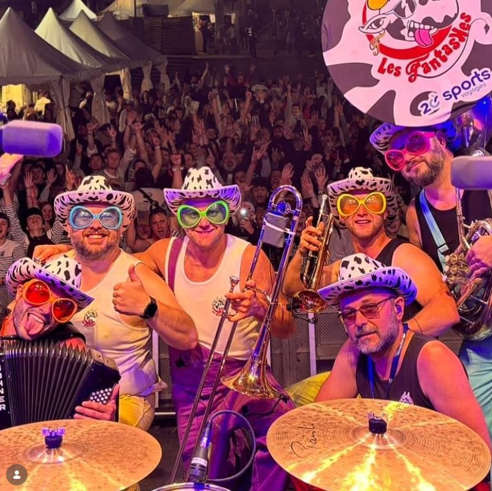
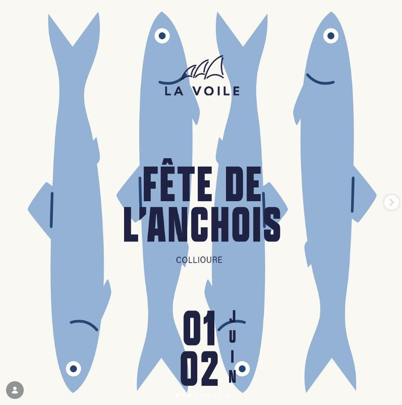

Événements & concerts
Quand le soleil se couche sur Collioure, La Voile et le Balco del Mar se transforment en scène à ciel ouvert.

La Fête de l'Anchois
Deux jours pour célébrer l'or de Collioure. Dégustations, salaisons, musique catalane et ambiance de village : l'anchois devient prétexte à la fête, et La Voile est aux premières loges.
Ouverture & dégustations
Stands, accords anchois & Banyuls, animations sur le port.
Grand banquet & concert
Repas catalan face à la mer, suivi d'un concert live.
Les rendez-vous de la saison
Programmation indicative — suivez notre Instagram pour les dates et confirmations.
Sunset DJ set
House & sons latins au Balco del Mar, dès 19h.
Concert live
Musique catalane, jazz manouche ou pop — au coucher du soleil.
Brunch & vinyles
Brunch face au port en musique, ambiance dominicale.
Soirées tapas & fanfare
La fanfare catalane débarque, tapas à volonté et danse sur le sable.

Votre événement, face à la mer
Anniversaire, mariage, soirée d'entreprise ou lancement : privatisez tout ou partie de La Voile et du Balco del Mar pour un moment inoubliable au bord de l'eau.
Notre équipe compose un menu sur mesure, accords mets & vins de la Côte Vermeille, animation musicale et coucher de soleil en prime.
Demander un devisSuivez la fête en temps réel
Toutes nos dates, concerts et surprises sont annoncés sur nos réseaux. Rejoignez-nous.